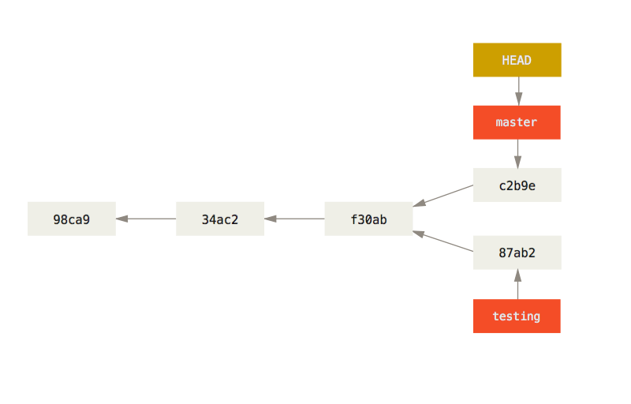

Git thinks about its data more like a stream of snapshots.

Commit and tree
$ git add README test.rb LICENSE
$ git commit -m 'The initial commit of my project'

Commits and parents

Branch and history

Creating a New Branch
$ git branch testing

Switching Branches
$ git checkout testing
$ # or
$ git switch testing

$ vim test.rb
$ git commit -a -m 'made a change'

$ git checkout master
$ vim test.rb
$ git commit -a -m 'made other changes'

$ git log --oneline --decorate --graph --all
* c2b9e (HEAD, master) made other changes
| * 87ab2 (testing) made a change
|/
* f30ab add feature #32 - ability to add new formats to the
* 34ac2 fixed bug #1328 - stack overflow under certain conditions
* 98ca9 initial commit of my project
working base

Fast-forward

$ git branch -d hotfix
Deleted branch hotfix (3a0874c).
$ git checkout iss53
Switched to branch "iss53"
$ vim index.html
$ git commit -a -m 'finished the new footer [issue 53]'
[iss53 ad82d7a] finished the new footer [issue 53]
1 file changed, 1 insertion(+)

Basic Merging
$ git checkout master
Switched to branch 'master'
$ git merge iss53
Merge made by the 'recursive' strategy.
index.html | 1 +
1 file changed, 1 insertion(+)

Git does a simple three-way merge, using the two snapshots pointed to by the branch tips and the common ancestor of the two.


Server and local repositories after cloning
someone else pushes to git.ourcompany.com and updates its master branch, then your histories move forward differently.

Local and remote work can diverge
git fetch origin
This command will fetch data and update your local database.


Rebase way
$ git checkout experiment
$ git rebase master
First, rewinding head to replay your work on top of it...
Applying: added staged command

$ git checkout master
$ git merge experiment

More Interesting Rebases

master = C6 <- client <- server
$ git rebase --onto master server client

$ git checkout master
$ git merge client

$ git rebase master server

$ git checkout master && git merge server